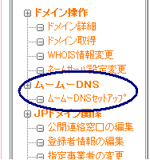

ムームードメインでいくつか独自ドメインを取得しているんですけど、DNS設定というのが難しく、特にシーサーブログで独自ドメイン化しようとしてもうまくいかない場合が多いです。
シーサーブログで独自ドメイン化する場合は、AレコードとかCNAMEとか何かとDNS設定が面倒ですが、割とバリュードメインで独自ドメインを取得した場合はスムーズに設定が運ぶようです。
でも、最近気づいたんですけど、「ムームーDNS」のカスタム設定という欄ができたようなんですが、これを使ってムームードメインで取得した独自ドメインをシーサーブログで運用できないかなって思うんです。

ムームーDNSのカスタム設定(シーサーブログ)の続き